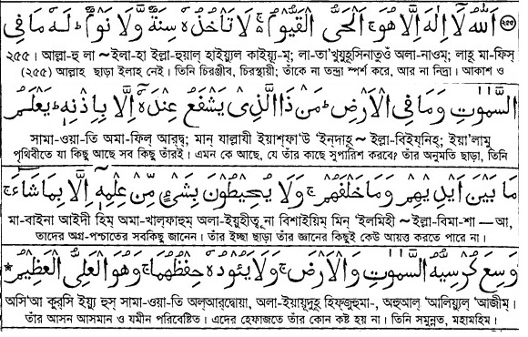
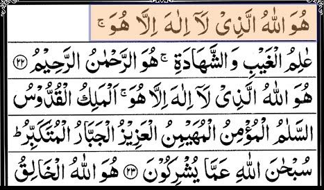
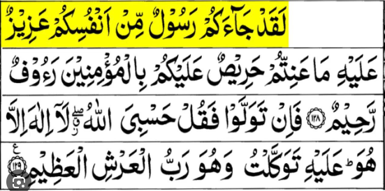

অজু করার পর কালেমা শাহাদাত পাঠ করলে তাহলে তার জন্যে জান্নাতের আটটি দরজা খুলে দেওয়া হয়। সে ইচ্ছা করলে এর যে কোনো দরজা দিয়ে (জান্নাতে) প্রবেশ করতে পারবে। (মুসলিম ২৩৪)
সালাম ফেরানোর পর নিম্নোক্ত আমল করা।
আল্লাহু আকবার একবার ও ‘আসতাগফিরুল্লাহ’ তিনবার। (ﺃَﺳْﺘَﻐْﻔِﺮُ ﺍﻟﻠَّﻪ) অর্থ : আল্লাহ মহান। হে আল্লাহ! আমি তোমার কাছে ক্ষমা প্রার্থনা করছি।
‘আল্লাহুম্মা আনতাস সালাম ওয়া মিনকাস সালাম, তাবা-রাকতা ইয়া যাল-জালালি ওয়াল ইকরাম’ -১ বার। ﺍﻟﻠَّﻬُﻢَّ ﺃَﻧْﺖَ ﺍﻟﺴَّﻼَﻡُ، ﻭَﻣِﻨْﻚَ ﺍﻟﺴَّﻼَﻡُ، ﺗَﺒَﺎﺭَﻛْﺖَ ﻳَﺎ ﺫَﺍ ﺍﻟْﺠَﻼَﻝِ ﻭَﺍﻟْﺈِﻛْﺮَﺍﻡِ অর্থ : হে আল্লাহ্! তুমি শান্তিময়, তোমার কাছ থেকেই শান্তি অবতীর্ণ হয়। তুমি বরকতময়, হে পরাক্রমশালী ও মর্যাদা প্রদানকারী।
আবু হুরাইরা রাঃ রাসুলুল্লাহ সাঃ থেকে বর্ণনা করেন যে, তিনি বলেছেন, যে ব্যক্তি প্রত্যেক নামাজের পর ৩৩ বার ‘সুবহানাল্লাহ’ ৩৩ বার ‘আলহামদুলিল্লাহ’ ৩৩ বার ‘আল্লাহু আকবার’ পড়ে এবং ১০০ বার পূর্ণ করার জন্য একবার “লা- ইলা-হা ইল্লাল্লা-হু ওয়াহ দাহু লা-শারিকা লাহু লাহুল মুলকু ওয়া লাহুল হামদু ওয়া হুয়া আলা কুল্লি শাইয়িন কাদীর” পড়ে, তার সমস্ত গুনাহ ক্ষমা করে দেয়া হয়। যদিও তা সাগরের ফেনাপুঞ্জের সমতুল্য হয়। (মুসলিম-১২২৮)।
সুরা ইখলাস, ফালাক্ব ও নাস ১ বার করে। (মাগরিব ও ফজরের পর তিনবার করে) এতে করে সকল ধরনের জাদু, বান, কু-নজর,খারাপ জীন শয়তানের অনিষ্ট থেকে পরিত্রান পাওয়া যাবে ইন শা আল্লাহ। (আবু দাঊদ২/৮৬, সহীহ তিরমিযী ১/৮, নাসাঈ ৩/৬৮)
যে কেউ প্রত্যেক ফরজ নামাজের পর আয়াতুল কুরসি তেলাওয়াত করে; তার মৃত্যুই তার জন্য জান্নাতে প্রবেশ করার জন্য বাঁধা হয়ে থাকে। (নাসাঈ, ইবনু হিব্বান, বুলুগুল মারাম)
আয়াতুল কুরসি।

ফজর ও মাগরিব নামাজের পরে সুরা হাশরের শেষ তিন আয়াত ও সুরা তাওবার শেষ দুই আয়াত পাঠ করা।
সুরা হাসরের শেষ তিন আয়াত।

সুরা তাওবার শেষ তিন আয়াত।

মা, বাবা, মৃত আত্বীয় স্বজন ও সন্তানদের জন্য আল্লাহর কাছে মনে মনে দোয়া করা।
ওজু না হলে নামাজও হবেনা তাই ওজু ভালো করে করতে হবে।
নামাজের যত ধীরস্থিরভাবে আদায় করবে ততই ভালো হবে তাড়াতাড়ি করলে নামাজ ঠিকমত আদায় হবেনা।
নামাজের মধ্যে মনযোগ ঠিক রাখা। নামাজ পড়ার সময় অনেক ধরনের দুনিয়ার চিন্তা আসবে যখনি চিন্তা আসবে তখনি মনকে আল্লাহর দিকে ফিরে নিয়ে যেতে হবে।
আল্লাহর ভয় অন্তরে রাখা আমরা দুনিয়াতে সাধারন কোন মন্ত্রী, এম পি বা উচ্চ পদের কারো সামনে দাঁড়ানোর সময় কতটুকু বিনিতভাবে দাঁড়ানো দরকার একবার চিন্তা করি। আর নামাজ পড়ার সময় আমরা বিশ্ব জাহানের মালিক যার কাছে আমাদের অবশ্যই ফিরে যেতে হবে তার সামনে দাঁড়াই সুতারাং আল্লাহর সামনে কেমন বিনিতভাবে দাঁড়ানো দরকার।
কিছু লোক আছে যারা নামাজ পড়ার সময় অত্যন্ত ঢিলাঢালা ভাবে দাঁড়ায়, কাপড় টানে, শরির চুলকায়, চুল ঠিককরে, এদিক সেদিক তাকায় এদের ব্যাপারে রাসুলুল্লাহ (স:) বলেন এদের অন্তরে যদি আল্লাহর ভয় থাকতো তবে তারা এমন করত না এভাবে নামাজ পড়া হল মুনাফিকের লক্ষন।
জামাতের সাথে নামাজ পড়ার সময় যদি রুকু বা সেজদা ছুটে যায় আর কেউ যদি সেটা নিজে নিজে পড়ে ইমামের সাথে যোগ দেয় তাহলে তার নামাজ হবেনা।
৩. রোজা।
রোজা কি?
সুবহে সাদিক বা ভোরের সূক্ষ আলো থেকে শুরু করে সূর্যাস্ত পর্যন্ত সকল প্রকার পানাহার,পাপাচার, কামাচার এবং সেই সাথে যাবতীয় ভোগ-বিলাস থেকেও বিরত থাকার নাম রোযা।
রোজার ৩ ফরজ।
১. নিয়ত করা।
২. সব ধরনের পানাহার থেকে বিরত থাকা।
৩. যৌন আচরণ থেকে বিরত থাকা।
রোজা রাখার ৪ শর্ত ।
১. মুসলিম হওয়া ।
২. বালেগ হওয়া।
৩. অক্ষম না হওয়া।
৪. ঋতুস্রাব থেকে বিরত থাকা নারী।
রোজা পাঁচ প্রকার।
১. ফরজ রোজা
২. রমজান মাসের রোজা ।
৩. কোন কারণ বশত রমজানের রোজা ভঙ্গ হয়ে গেলে তার কাযা আদায়ে রোজা।
৪. শরীয়তে স্বীকৃত কারণ ব্যতীত রমজানের রোজা ছেড়ে দিলে কাফ্ফারা হিসেবে ৬০টি রোজা রাখা।
৫. রোজার মান্নত করলে তা আদায় করা।
ওয়াজিব রোজা: নফল রোজা রেখে ভঙ্গ করলে পরবর্তীতে তা আদায় করা ওয়াজিব।
সুন্নত রোজা: মহরম মাসের নয় এবং দশ তারিখে রোজা রাখা।
নফল রোজা: মোস্তাহাব আর নফল খুব কাছাকাছির ইবাদত। সহজ অর্থে নফল হলো যা ফরজ, ওয়াজিব, সুন্নত নয় এমন ইবাদত পূণ্যের নিয়তে করা। রোজার ক্ষেত্রেও তাই।
মুস্তাহাব রোজা: প্রতি চন্দ্র মাসের ১৩, ১৪, এবং ১৫ তারিখে, প্রতি সপ্তাহের সোম ও বৃহস্পতিবারে, কোন কোন ইমামের মতে শাওয়াল মাসে পৃথক পৃথক প্রতি সপ্তাহে দুটো করে ছয়টি রোজা রাখা মোস্তাহাব। তবে ইমাম আবু হানিফা (রহ.)-এর মতে এক সাথে হোক কিংবা পৃথক পৃথক হোক শাওয়ালের ছয়টি রোজা মুস্তাহাব।
রোজা ভঙ্গ হলে করনীয়
বিনা কারণে রোজা ভঙ্গ করলে তাকে অবশ্যই কাজা-কাফফারা উভয়ই আদায় করা ওয়াজিব। যতটি রোজা ভঙ্গ হবে, ততটি রোজা আদায় করতে হবে। কাজা রোজা একটির পরিবর্তে একটি অর্থাৎ রোজার কাজা হিসেবে শুধু একটি রোজাই যথেষ্ট। কাফফারা আদায় করার তিনটি বিধান রয়েছে।
ইচ্ছাকৃতভাবে রোজা ভঙ্গের জন্য একাধারে ৬০টি রোজা রাখতে হবে। কাফফারা ধারাবাহিকভাবে ৬০টি রোজার মাঝে কোনো একটি ভঙ্গ হলে আবার নতুন করে শুরু করতে হবে।
যদি কারও জন্য ৬০টি রোজা পালন সম্ভব না হয় তবে ৬০ জন মিসকিনকে দুই বেলা খাওয়াতে হবে। কেউ অসুস্থতাজনিত কারণে রোজা রাখার ক্ষমতা না থাকলে ৬০ জন ফকির, মিসকিন, গরিব বা অসহায়কে প্রতিদিন দুই বেলা করে পেটভরে খাওয়াতে হবে।
যেসব কারণে রমজান মাসে রোজা ভঙ্গ করা যাবে কিন্তু পরে কাজা করতে হয় তা হচ্ছে।
রোগ-ব্যাধি বৃদ্ধির বেশি আশঙ্কা থাকলে।
মুসাফির অবস্থায়।
মাতৃগর্ভে সন্তানের ক্ষতির আশঙ্কা থাকলে।
এমন ক্ষুধা বা তৃষ্ণা হয়, যাতে মৃত্যুর আশঙ্কা থাকতে পারে।
শক্তিহীন বৃদ্ধ হলে।
কোনো রোজাদারকে সাপে দংশন করলে।
মহিলাদের মাসিক হায়েজ-নেফাসকালীন রোজা ভঙ্গ করা যায়।
যেসব কারণে শুধু কাজা আদায় করতে হয় ।
স্ত্রীকে চুম্বন বা স্পর্শ করার কারণে যদি বীর্যপাত হয়।
ইচ্ছাকৃতভাবে বমি করলে।
পাথরের কণা, লোহার টুকরা, ফলের বিচি গিলে ফেললে।
ডুশ গ্রহণ করলে।
বিন্দু পরিমাণ কোন খাবার খেলে তবে অনিচ্ছাকৃত ভাবে বা মনের ভুলে খেলে রোজা ভাংবে না তবে মনে আসা মাত্রই খাবার খাওয়া বন্ধ করে দিতে হবে।
নাকে বা কানে ওষুধ দিলে (যদি তা পেটে চলে যায়) ।
মাথার ক্ষতস্থানে ওষুধ দেওয়ার পর তা যদি মস্তিষ্কে বা পেটে চলে যায়।
যোনিপথ ব্যতীত অন্য কোনোভাবে সহবাস করার ফলে বীর্য নির্গত হলে।
স্ত্রী লোকের ওষুধ দিলে।
রোজা ভাঙার কারণ সমূহ ।
সহবাস করা।
সহবাস ছাড়া অন্য যেকোন উপায়ে বীর্যপাত।
পানাহার করা।
ধুমপান করা।
খাদ্যানুরূপ কিছু গ্রহণ করা।
শিঙ্গা লাগানো।
ইচ্ছাকৃত বমি করা।
নারীদের হায়েয ও নেফাস হলে।
আজান শুরু হওয়ার অন্তত ১০ মিনিট আগে খাবার খাওয়া বন্ধ করে দিতে হবে কারন সময় আছে মনে করে খেতে থাকলে রোজা ভেঙ্গে যাবে।
মাগরিবের আযান হওয়ার আগে (সুর্য্য ডোবার আগে) ইফতার করে ফেললে রোজা ভেঙ্গে যাবে।
রোজা থেকে মিথ্যা বললে, গীবত করলে, নাটক সিনেমা দেখে সময় পার করলে রোজা ঠিকমত আদায় হবেনা।
হজ হলো মুসলমানদের জন্য পবিত্রতম শহর সৌদি আরবের মক্কায় অনুষ্ঠিত একটি বার্ষিক ইসলামি তীর্থযাত্রা। শারীরিক ও আর্থিকভাবে সক্ষম এবং তীর্থযাত্রীর অনুপস্থিতিতে তার পরিবার নিজেদের ভরণপোষণ করতে সক্ষম হলে সকল প্রাপ্তবয়স্ক মুসলমানদের জীবনে অন্তত একবার হজ করতে হয়।
হজ অত্যন্ত গুরুত্বপুর্ন এবং স্পর্শ কাতর একটি বিষয় তাই নিচের বর্ননা শুধমাত্র সামান্য একটু ধারনার জন্য দেয়া হলো। যারা হজ করবেন আপনারা অবশ্যই একজন ভালো আলেমের সাথে যোগাযোগ করবেন এবং হজের বিষয়গুলো আগে থেকেই সবকিছু ভালোভাবে যেনে নিবেন।
নিয়মাবলি। (ফরজ সমূহ)
ইহরাম বাঁধা।
তাওয়াফ ও সাঈ করা।
হজের প্রথম দিন: ৮ই জিলহজ্জ (তারবিয়া দিবস)।
মিনায় অবস্থান।
দ্বিতীয় দিন: ৯ জিলহজ্জ (আরাফাতের দিন)।
আরাফাতের ময়দানে অবস্থান।
মুজদালিফাহ।
তৃতীয় দিন: ১০ (কুরবান দিবস)।
রামি আল জামারাত।
পশু কুরবানি।
চুল অপসারণ।
তাওয়াফ জিয়ারত/ইফাদাহ।
চতুর্থ দিন: ১১ জিলহজ্জ ("শয়তানকে পাথর নিক্ষেপ" )।
পঞ্চম দিন: ১২ জিলহজ্জ (১২ জিলহুজে, ১১ জিলহজ্জের মতো স্তম্ভগুলিকে পাথর ছুঁড়ে মারার একই প্রক্রিয়া ঘটে।)
মিনায় শেষ দিন: যদি ১২ তারিখে সূর্যাস্তের আগে রওনা হতে না পারে বা আরও বেশি সময় থাকতে পছন্দ করে, তাহলে তাদের মক্কায় ফিরে যাওয়ার আগে ১৩ তারিখে আবার পাথর নিক্ষেপের অনুষ্ঠান সম্পন্ন করতে হবে।[
জাকাত হলো ধনিদের উপর গরিবদের আল্লাহ প্রদত্ত হ্বক। অর্থাৎ ধনিদের আল্লাহ তালাহ যে সম্পদ দিয়েছেন তার থেকে একটি নিদ্ধিষ্ট পরিমান গরিব ও অভাবগ্রস্থদের দান করাই হচ্ছে যাকাত।
যাকাত রাষ্টীয়ভাবে বা একজন বিজ্ঞ আলেমের তত্বাবধানে হিসাব করে দিতে হবে। নিজে নিজে অনুমান নির্ভর দেয়া যাবেনা।
যাকাতের পরিমান।
সাধারণত নির্ধারিত সীমার অধিক সম্পত্তি হিজরি ১ বছর ধরে থাকলে মোট সম্পত্তির ২.৫ শতাংশ বিতরণ করতে হয়।
যাকাতের শর্তসমূহ
সম্পদের উপর পূর্ণ মালিকানা
সম্পদের উপর যাকাত ওয়াজিব হওয়ার জন্য সম্পদের মালিকানা সুনির্দিষ্ট হওয়া আবশ্যক। অর্থাৎ সম্পদ, মালিকের অধিকারে থাকা, সম্পদের উপর অন্যের অধিকার বা মালিকানা না থাকা এবং নিজের ইচ্ছামতো সম্পদ ভোগ ও ব্যবহার করার পূর্ণ অধিকার থাকা।
সম্পদ উৎপাদনক্ষম হওয়া
যাকাতের জন্য সম্পদকে অবশ্যই উৎপাদনক্ষম, প্রবৃদ্ধিশীল হতে হবে, অর্থাৎ সম্পদ বৃদ্ধি পাবার যোগ্যতাই যথেষ্ট। যেমন: গরু, মহিষ, ব্যবসায়ের মাল, নগদ অর্থ ব্যবসায়িক উদ্দেশ্যে ক্রীত যন্ত্রপাতি ইত্যাদি মালামাল বর্ধনশীল। অর্থাৎ যেসকল মালামাল নিজের প্রবৃদ্ধি সাধনে সক্ষম নয়, সেসবের উপর যাকাত ধার্য হবে না, যেমন: ব্যক্তিগত ব্যবহারের মালামাল, চলাচলের বাহন ইত্যাদি।
নিসাব পরিমাণ সম্পদ
যাকাত ফরয হওয়ার তৃতীয় শর্ত হচ্ছে শরীয়ত নির্ধারিত সীমাতিরিক্ত সম্পদ থাকা। সাধারণ ৫২.৫ তোলা রূপা বা ৭.৫ তোলা স্বর্ণ বা উভয়টি মিলে ৫২.৫ তোলা রূপার সমমূল্যের সম্পদ থাকলে সে সম্পদের যাকাত দিতে হয়। পশুর ক্ষেত্রে এই পরিমাণ বিভিন্ন (বিস্তারিত: 'যাকাত প্রদানের নিয়ম' দ্রষ্টব্য)।
মৌলিক প্রয়োজনাতিরিক্ত সম্পদ থাকা
সারা বছরের মৌলিক প্রয়োজন মিটিয়ে যে সম্পদ উদ্ধৃত থাকবে, শুধুমাত্র তার উপরই যাকাত ফরয হবে। অতিরিক্ত বলতে পরিবারের ব্যয় বহনের পর যা অতিরিক্ত বা অবশিষ্ট থাকে তাকে বুঝায়। জনাব ইউসুফ আল কারযাভী'র মতে স্ত্রী, পুত্র, পরিজন, ও পিতামাতা এবং নিকটাত্মীয়দের ভরণ-পোষণও মৌলিক প্রয়োজনের অন্তর্ভুক্ত।
ঋণমুক্ততা
নিসাব পরিমাণ সম্পদ হলেও ব্যক্তির ঋণমুক্ততা, যাকাত ওয়াজিব হওয়ার অন্যতম শর্ত। যদি সম্পদের মালিক এত পরিমাণ ঋণগ্রস্থ হন যা, নিসাব পরিমাণ সম্পদও মিটাতে অক্ষম বা নিসাব পরিমাণ সম্পদ তার চেয়ে কম হয়, তার উপর যাকাত ফরয হবে না।
সম্পদ এক বছর আয়ত্তাধীন থাকা
নিসাব পরিমাণ স্বীয় সম্পদ ১ বছর নিজ আয়ত্তাধীন থাকা যাকাত ওয়াজিব হওয়ার পূর্বশর্ত। তবে কৃষিজাত ফসল, খনিজ সম্পদ ইত্যাদির যাকাত (উশর) প্রতিবার ফসল তোলার সময়ই দিতে হবে। ব্যবসায়ী প্রতিষ্ঠানে ও কোম্পানীর ক্ষেত্রে বছর শেষে উদ্বর্তপত্রে (Balance Sheet) বর্ণিত সম্পদ ও দায়-দেনা অনুসারে যাকাতের পরিমাণ নির্ধারিত হবে।
বিশেষ ক্ষেত্রে যাকাত
অপ্রাপ্তবয়স্ক ও পাগলের যাকাত: সম্পদের মালিক অপ্রাপ্তবয়স্ক কিংবা পাগল হলে, তার যাকাত তার আইনানুগ অভিভাবককে আদায় করতে হবে।
যৌথ মালিকানাধীন সম্পত্তির যাকাত: কোনো সম্পদে যৌথ মালিকানা থাকলে সম্পদের প্রত্যেক অংশীদার তার স্ব স্ব অংশের উপরে যাকাত দিবেন, যদি তা নিসাব পরিমাণ হয় বা তার অতিরিক্ত হয়। অর্থাৎ সম্পদের স্বীয় অংশের মূল্য অন্যান্য সম্পদের সাথে যোগ করে হিসাব করে যদি দেখা যায় তা নিসাব পরিমাণ হয়েছে বা অতিক্রম করেছে, তবে যাকাত দিতে হবে।
নির্ধারিত যাকাত: যাকাত নির্ধারিত হওয়াসত্ত্বেয় পরিশোধের আগেই সম্পদের মালিকের মৃত্যু হলে তার উত্তরাধিকারগণ অথবা তার তত্ত্বাবধায়ক তার সম্পত্তি থেকে প্রথমে যাকাত বাবদ পাওনা ও কোনো ঋণ থাকলে তা পরিশোধ করবেন। এরপর অবশিষ্ট সম্পত্তি, উত্তরাধিকারীদের মধ্যে বন্টিত হবে।
তত্ত্বাবধায়কের দায়িত্বে ন্যস্ত সম্পদের যাকাত: মালিকের পক্ষ থেকে নিয়োগকৃত আইনানুগ তত্ত্বাবধায়কের কাছে সম্পত্তি ন্যস্ত থাকলে মালিকের পক্ষে উক্ত তত্ত্বাবধায়ক সে যাকাত পরিশোধ করবেন।
বিদেশস্থ সম্পদের যাকাত: যাকাত ওয়াজিব হবার জন্য সম্পত্তি নিজ দেশে থাকা শর্ত নয়। বরং সম্পত্তি অন্য দেশে থাকলেও তার উপর যাকাত দিতে হবে। তবে উক্ত দেশ ইসলামী রাষ্ট্র হলে এবং দেশের সরকার যাবতীয় সম্পদের উপর যাকাত দিলে তা আর আলাদা করে দিতে হবে না।
যাকাত বণ্টনের খাতসমূহ
পবিত্র কুরআনের সূরা আত-তাওবার ৬০ নাম্বার আয়াতে যাকাত বণ্টনে আটটি খাত আল্লাহ তায়ালা নির্ধারন করেছেন। এই খাতগুলো সরাসরি কুরআন দ্বারা নির্দিষ্ট এবং যেহেতু তা আল্লাহর নির্দেশ, তাই এর বাইরে যাকাত বণ্টন করলে তা ইসলামী শরিয়তসম্মত হয় না।
১. ফকির (যার কিছুই নেই)।
২. মিসকীন(যার নেসাব পরিমাণ সম্পদ নেই।
৩. যাকাত আদায়ে নিযুক্ত কর্মচারী (যার অন্য জীবিকা নেই)।
৪. নওমুসলিমদের(আর্থিক সংকটে থাকলে)।
৫. ক্রীতদাস(মুক্তির উদ্দেশ্যে)।
৬. ধনী সম্পদশালী ব্যক্তি যার সম্পদের তুলনায় ঋণ বেশি।
৭. (স্বদেশে ধনী হলেও বিদেশে) আল্লাহর পথে জেহাদে রত ব্যক্তি।